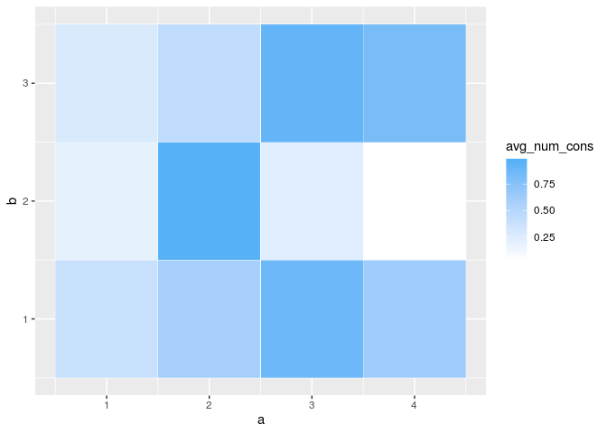

This package simulates data using the bipartite stochastic block model (BiSbm).
Example
Super simple simulation.
First we need to setup basic parameters corresponding to model
N_a <- 125 # Number of nodes of the a type
N_b <- 105 # Number of nodes of the b type
K_a <- 4 # How many blocks of a type nodes are there
K_b <- 3 # How many blocks of the b type nodes are thereInputs Needed
The Stochastic Block Model is defined by two main inputs.
Group Membership Vectors
The group membership vectors are vectors of length N_a for a-nodes and N_b for b-nodes. Each element in these vectors is the integer ID of the group that node belongs to.
assign_group_membership is a function that will build these membership vectors for you when supplied with size and group numbers. By default they evenly space the groups across the nodes but by using the option place_randomly = TRUE you can also stochastically assign group membership.
The Lambda matrix
The Lambda matrix (or tidy dataframe in this case) tells the model the average number of connections between each pair of a and b groups. In the case of the standard Poisson SBM this means that if the model is determining the number of edges between a node in group i and a node in group j, it does so by drawing from a Poisson distribution with the mean (or lambda) value of Lambda(i,j).
Here’s what this Lambda looks like.
ggplot(Lambda, aes(x = a, y = b)) +
geom_tile(
aes(fill = avg_num_cons),
color = 'white'
) +
scale_fill_gradient(low = "white", high = "#56B1F7")
The generate_random_lambda() function by default builds a lambda between K_a a-type groups and K_b b-type groups by drawing from a random uniform distribution. You can change the model that generates the values by passing the random_generator option a function that takes an input n and returns n values.
For instance, here’s a Lambda where the individual values are drawn from a beta distribution.
drawn_n_betas <- function(n) {
rbeta(n, shape1 = 2, shape2 = 2)
}
generate_random_lambda(K_a = K_a, K_b = K_b, random_generator = drawn_n_betas)
#> a b avg_num_cons
#> 1 1 1 0.74878219
#> 2 2 1 0.03877181
#> 3 3 1 0.69267063
#> 4 4 1 0.60364815
#> 5 1 2 0.31644165
#> 6 2 2 0.55183415
#> 7 3 2 0.61135893
#> 8 4 2 0.16986558
#> 9 1 3 0.23948770
#> 10 2 3 0.46559814
#> 11 3 3 0.90508306
#> 12 4 3 0.58878403Drawing simulated data from a model
Now that we have defined the two main inputs needed for determining an SBM, the group membership vectors and the Lambda matrix, we can proceed to actually drawing from the SBM model.
Note that we have provided names for the different node types with the a_name and b_name arguments.
all_node_pairs <- draw_from_model(b_a, b_b, Lambda, a_name = "Subjects", b_name = "Phecodes")
all_node_pairs %>% head()
#> # A tibble: 6 x 6
#> Subjects Phecodes a_group b_group avg_num_cons num_edges
#> <int> <int> <int> <int> <dbl> <int>
#> 1 1 1 1 1 0.393 0
#> 2 2 1 2 1 0.593 1
#> 3 3 1 3 1 0.877 1
#> 4 4 1 4 1 0.627 0
#> 5 5 1 1 1 0.393 1
#> 6 6 1 2 1 0.593 1We can compare this now with the true underlying generation parameters….
plot_sim_results <- function(drawn_node_pairs){
drawn_node_pairs %>%
gather(key = 'type', value = 'connections', num_edges, avg_num_cons) %>%
mutate(type = ifelse(type == 'num_edges', "Drawn Values", "Lambda")) %>%
arrange(a_group, b_group) %>%
ggplot(aes(y = reorder(Subjects, a_group), x = reorder(Phecodes, b_group))) +
geom_tile(aes(fill = connections), color = "white") +
facet_wrap(~type) +
scale_fill_gradient(low = "white", high = "#56B1F7") +
theme_minimal() +
theme(axis.text = element_blank()) +
labs(y = 'Subjects', x = 'Phecodes')
}
plot_sim_results(all_node_pairs)
Binary Mode
If only binary connected, not-connected results are desired, there is an option binary_connections in draw_from_model() that uses the bernouli distribution to decide if each edge exists or not, rather than the standard Poisson.
draw_from_model(
b_a = b_a,
b_b = b_b,
Lambda = Lambda,
binary_connections = TRUE,
a_name = "Subjects",
b_name = "Phecodes"
) %>%
plot_sim_results()
Setting up planted patterns
If more control over the model setup is desired, the function setup_planted_pattern_model allows specification of a full model allowing you to specify patterns of b-nodes that characterize groups of a-nodes.
my_patterns <- tribble(
~b1, ~b2, ~b3, ~b4, ~size,
1, 1, 0, 0, 10,
1, 1, 1, 0, 15,
0, 0, 0, 1, 13,
0, 0, 1, 1, 24
)
planted_model_params <- setup_planted_pattern_model(
my_patterns,
num_noise_nodes = 10,
noise_p = 0.03,
planted_p_on = 0.95,
planted_p_off = 0.01
)
planted_model_params
#> $b_a
#> [1] 1 1 1 1 1 1 1 1 1 1 2 2 2 2 2 2 2 2 2 2 2 2 2 2 2 3 3 3 3 3 3 3 3 3 3
#> [36] 3 3 3 4 4 4 4 4 4 4 4 4 4 4 4 4 4 4 4 4 4 4 4 4 4 4 4
#>
#> $b_b
#> [1] 1 2 3 4 5 5 5 5 5 5 5 5 5 5
#>
#> $Lambda
#> # A tibble: 20 x 3
#> a b avg_num_cons
#> <int> <int> <dbl>
#> 1 1 1 0.95
#> 2 2 1 0.95
#> 3 3 1 0.01
#> 4 4 1 0.01
#> 5 1 2 0.95
#> 6 2 2 0.95
#> 7 3 2 0.01
#> 8 4 2 0.01
#> 9 1 3 0.01
#> 10 2 3 0.95
#> 11 3 3 0.01
#> 12 4 3 0.95
#> 13 1 4 0.01
#> 14 2 4 0.01
#> 15 3 4 0.95
#> 16 4 4 0.95
#> 17 1 5 0.03
#> 18 2 5 0.03
#> 19 3 5 0.03
#> 20 4 5 0.03The function returns a list with the three needed inputs for draw_from_model()
draw_from_planted <- planted_model_params %$%
draw_from_model(
b_a, b_b, Lambda,
binary_connections = TRUE,
a_name = "Subjects",
b_name = "Phecodes" )
plot_sim_results(draw_from_planted)
Running lots of simulations
Once you have your SBM inputs setup all you need to do is loop for as many simulations as you want and call draw_from_model() each time to get new draws.
num_draws <- 36
all_draws <- 1:num_draws %>%
purrr::map_dfr(function(draw_num){
planted_model_params %$%
draw_from_model(b_a, b_b, Lambda, binary_connections = TRUE, a_name = "Subjects", b_name = "Phecodes") %>%
mutate(draw = draw_num)
})
all_draws %>%
arrange(a_group, b_group) %>%
ggplot(aes(y = reorder(Subjects, a_group), x = reorder(Phecodes, b_group))) +
geom_tile(aes(fill = num_edges), color = "white") +
scale_fill_gradient(low = "white", high = "#56B1F7") +
labs(y = 'Subjects', x = 'Phecodes') +
guides(fill = FALSE) +
facet_wrap(~draw) +
theme_minimal() +
theme(axis.text = element_blank())